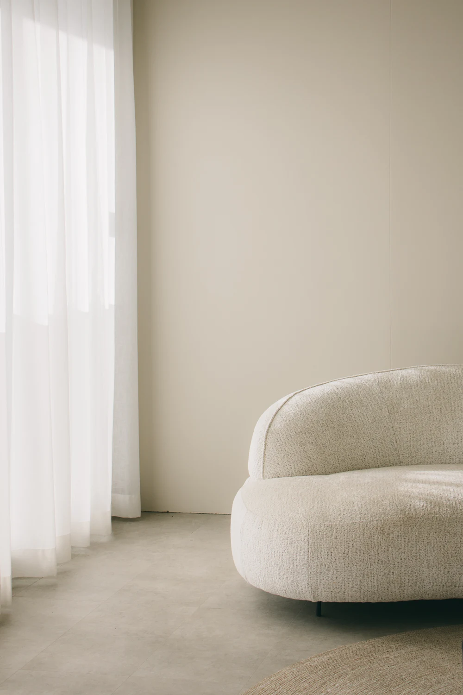
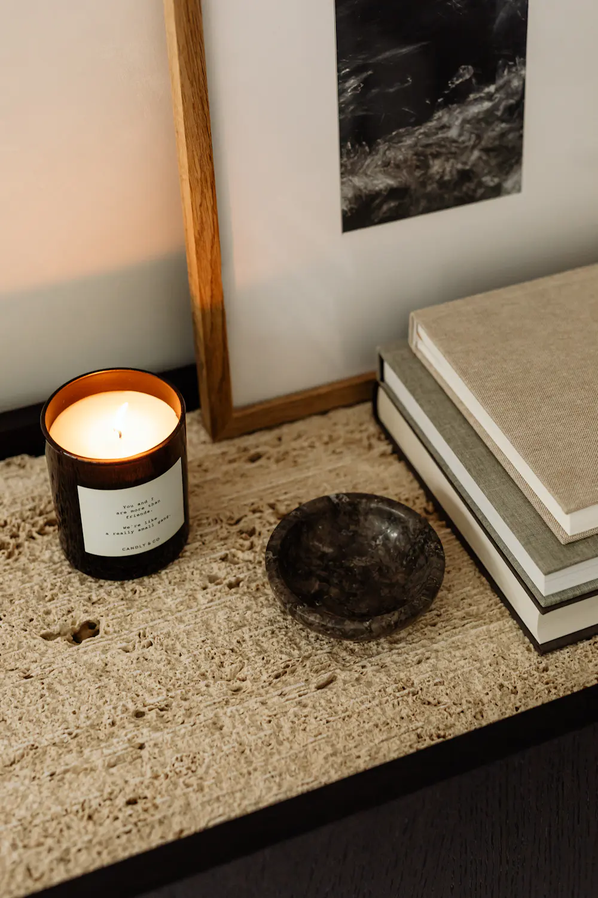
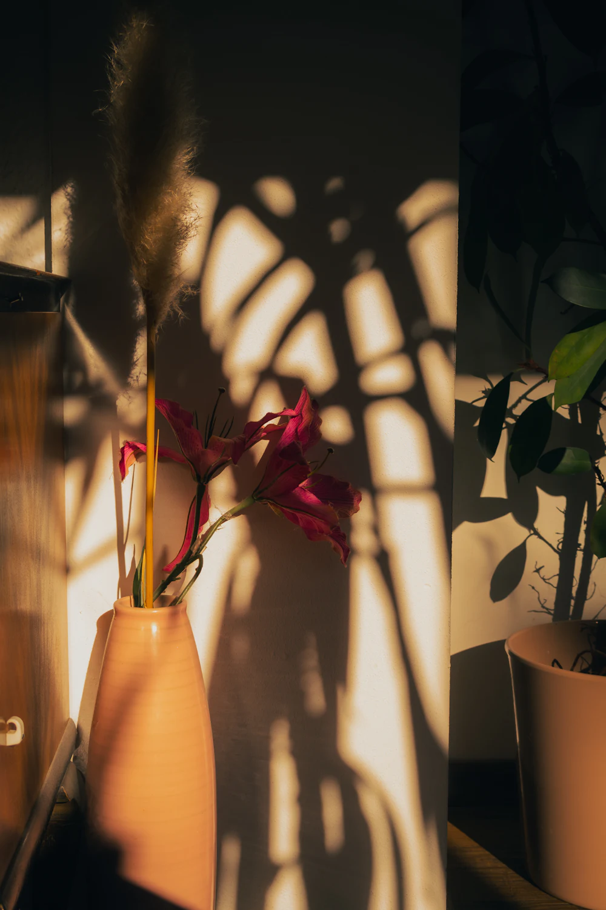

Ce moment est dédié à instaurer un climat de confiance et d’écoute, afin que vous vous sentiez en sécurité et à l’aise.

Hypnothérapeute à Porcelette
« Chaque accompagnement est unique, adapté à votre rythme et à vos besoins. »
Sur rendez-vous07 81 45 23 28
Chapitre premierL’approche
Je crois profondément que chacun a en lui la capacité de changer et de s’épanouir.

Ce moment est dédié à instaurer un climat de confiance et d’écoute, afin que vous vous sentiez en sécurité et à l’aise.

La séance se déroule dans une atmosphère apaisante, et vous êtes guidé progressivement vers un état de relaxation profonde, où votre esprit peut accéder à ses propres ressources pour amorcer les changements désirés tout en douceur.
en un plan-séquencePremière séance, 1 h 30 à 2 h ; suivi, 1 h à 1 h 30
Lors de la 1ère séance d’hypnose, qui dure environ 1 h 30 à 2 h, nous prenons le temps d’explorer en profondeur vos besoins et vos attentes.
Première séance · 1 h 30 à 2 h
Mon objectif est de vous accompagner vers un mieux-être durable en exploitant vos ressources intérieures et en vous aidant à atteindre vos objectifs personnels.
Mon accompagnement est fondé sur la bienveillance, l’écoute et la personnalisation ; il repose sur l’hypnose ericksonienne et conversationnelle, axée sur la détente et la relaxation.
Les séances de suivi, d’une durée d’1 h à 1 h 30, sont spécifiquement conçues pour continuer à travailler sur vos besoins, vos objectifs et pour renforcer les changements initiés.
Séances de suivi · 1 h à 1 h 30
Bande-annonce
En quelques plans, avant le film.
Détente et relaxation.
Un temps pour relâcher, dans une atmosphère apaisante.

Gestion des émotions.
Apprendre à accueillir ce que vous ressentez, à votre rythme.

Confiance en vous.
Découvrir et libérer votre plein potentiel, accompagné avec bienveillance.

Vos ressources intérieures.
Avancer vers vos objectifs en vous appuyant sur ce qui est déjà en vous.
Photos d’ambiance : les images de votre lieu prendront leur place.
les séances, leurs tarifs, et comment venir
Billet d’entréeAurore Nussbaum
Séance d’hypnothérapie
60 € à 90 €
Sur rendez-vous
07 81 45 23 28Aurore Nussbaum, hypnothérapeute
INT. LE CABINET · PORCELETTE · JOUR
Aurore Nussbaum, hypnothérapeute, prend la parole.
AURORE
J’ai découvert un outil incroyable qui a profondément contribué à ma transformation personnelle.
(un temps)
Désireuse de mieux comprendre cette approche, j’ai commencé à pratiquer l’hypnose pour moi-même.
(un temps)
Cette expérience m’a inspirée à me former davantage afin d’accompagner les autres vers le changement et le mieux-être ; pour cela j’ai choisi l’école EHTN.
(un temps)
Je suis prête à vous accompagner et vous guider avec bienveillance afin que vous puissiez découvrir et libérer votre plein potentiel.
(un temps)
À l’image du cerf, avancez avec calme et assurance vers votre transformation intérieure.
FONDU ENCHAÎNÉ.